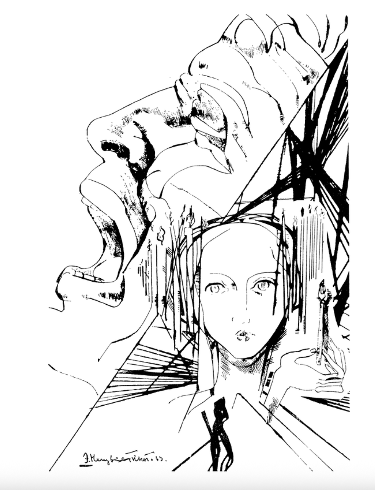
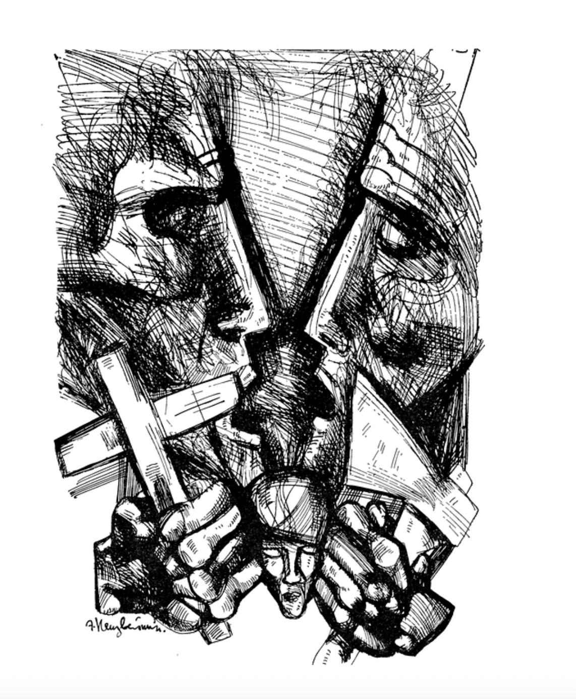
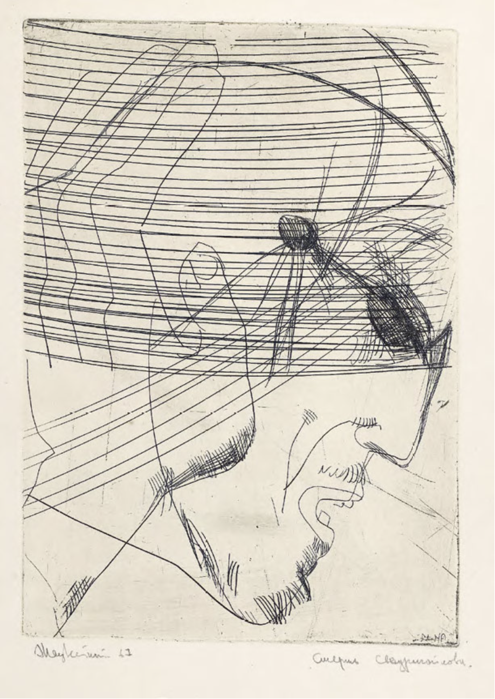

Ernst Neizvestnyi's Illustrations for Dostoevsky's novel
Crime and Punishment
Illustration
Description

artist Ernst Neizvestnyi (1970)

artist Ernst Neizvestnyi (1970)

Svidrigailov's death
artist Ernst Neizvestnyi (1967)
Articles about Ernst Neizvestnyi's illustrations
Per Dalgaard. "Neizvestny's Dostoevsky Illustrations: Bakhtinian Polyphony Applied to Visual Art"
Anna Chudetskaia. "Illustrations of Ernst Neizvesvestnyi to Dostoevsky's novel Crime and Punoishment (in Russian).